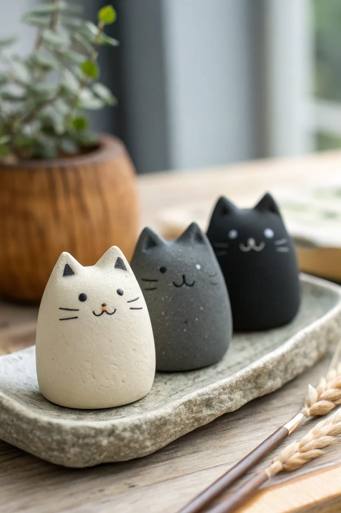
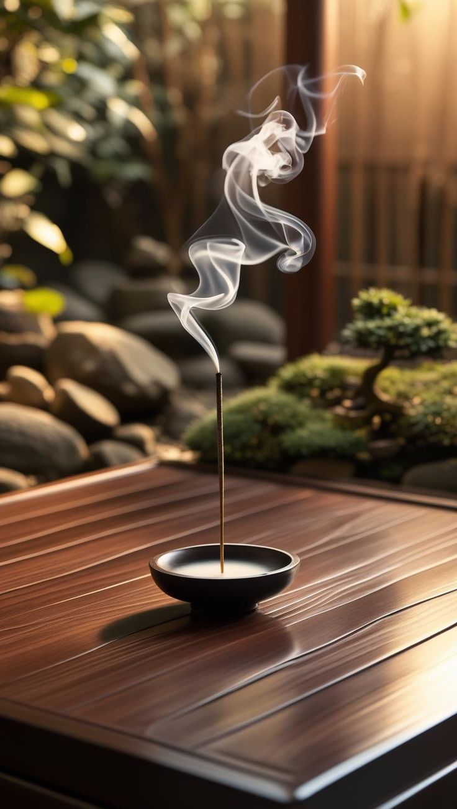
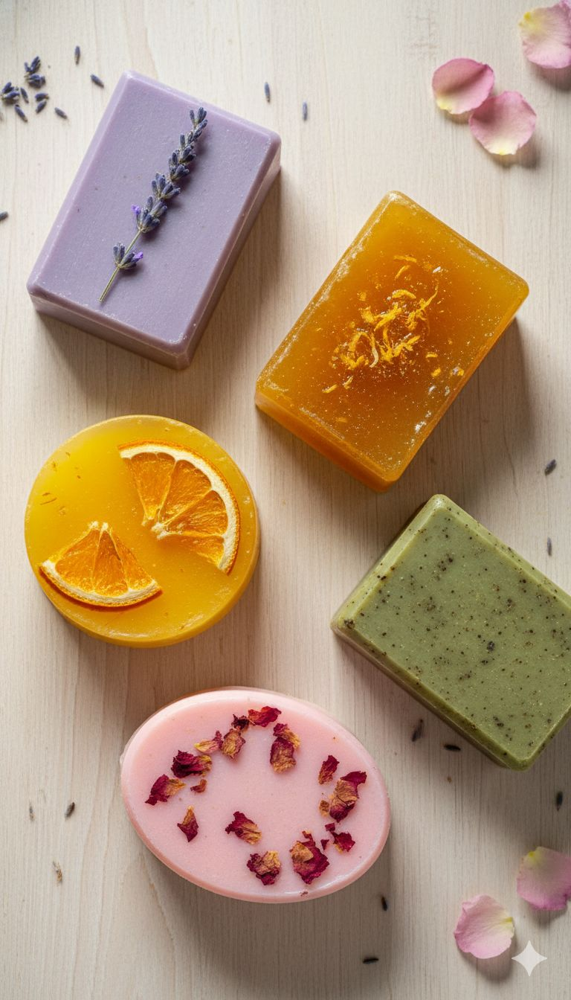

DESDE CERO
Nuestros Procesos Artesanales
Conocé el paso a paso, las técnicas y la dedicación detrás de cada una de nuestras creaciones.

Proceso de Cerámica
Del modelado a mano y el primer horneado hasta el esmaltado final. Descubrí cómo cobra vida cada pieza.
Ver proceso completo →
Proceso de Sahumerios
Mezclas de resinas naturales, aglutinantes orgánicos y secado al sol para dar lugar a aromas puros.
Ver proceso completo →
Proceso de Jabones
Saponificación en frío, aceites vegetales y botánicos seleccionados para el cuidado consciente de la piel.
Ver proceso completo →
Proceso de Velas
Cera de soya vertida a mano, pabilos de algodón y esencias aromáticas pensadas para equilibrar tus espacios.
Ver proceso completo →